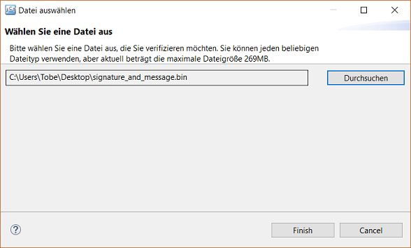
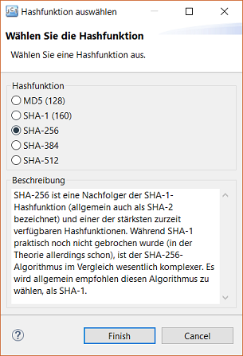
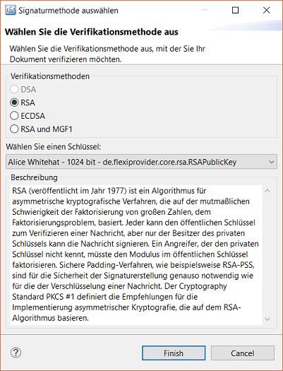
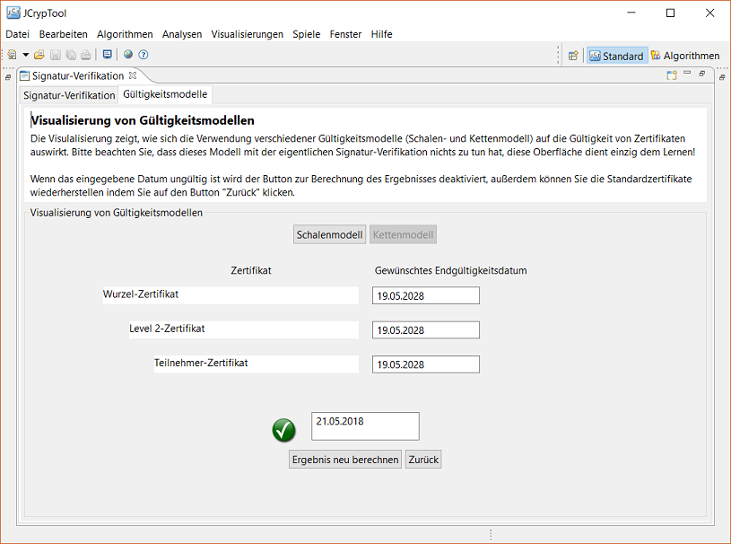

Willkommen in der Online Hilfe des Plug-Ins zur Visualisierung der Signaturverifizierung.
Nachfolgenden finden Sie einen Überblick des Plug-Ins, sowie eine detaillierte Erklärung zu jedem Schritt des Signaturverifizierungsprozesses.
Hier kommen Sie zur Hilfe der Validierung von Zertifikaten nach Gültigkeitsmodellen.
Die Visualisierung soll die Verifizierung einer Signatur für ein bestimmtes, signiertes Dokument zeigen.
Eine digitale Signatur kann zur Authentifizierung der Identität des Senders oder des Unterzeichners des Dokuments genutzt werden.
Sie sichert außerdem die Integrität des Dokumentes selbst.
Schrittweises zurückgehen. Alle vorgenommenen Änderungen oder Einstellungen bleiben gespeichert, bis zu dem Schritt zu dem man zurück geht.
Um den Signaturverifizierungsprozess zu starten, klicken Sie den Button "Input auswählen". Wählen Sie eine bereits vorhandene Signatur-Datei aus, die mit der "Signatur-Demo"-Visualisierung erzeugt wurde. Die maximale Dateigröße wird Ihnen in der Titelzeile des Fensters angezeigt. Sollten Sie noch keine signierte Datei besitzen, können Sie sich mit der Signatur-Demo Visualisierung eine solche Datei erstellen.

Der zweite Schritt des Signaturverifizierungsprozesses ist die Berechnung des Hashwertes der signierten Datei. Eine Hashfunktion bildet Daten variabler Länge auf einen Wert fester Länge ab. Statt der eigentlichen Nachricht wird nur deren Hashwert signiert (bzw. verifiziert). Dies erhöht die Effizienz in der Regel deutlich, da der Hashwert oft deutlich kleiner ist als die eigentliche Nachricht. Mit der Neuberechnung des Hashwertes der Datei kann diese auf Veränderung geprüft werden. Es muss der gleiche Hashalgorithmus verwendet werden wie bei der Signaturerstellung. Normalerweise enthält die Signatur eine Angabe dazu, welcher Algorithmus bei der Signierung verwendet wurde. Das ist hier nicht der Fall, sodass der Nutzer diese manuell angeben muss.
Der MD5-Algoritmus (veröffentlicht im Jahr 1992 und spezifiziert in RFC 1321) generiert aus einer gegebenen Nachricht einen 128-Bit langen "Fingerabdruck" oder "Hashwert". Der MD5-Algoritmus ist für digitale Signaturapplikationen vorgesehen, in der sehr große Dateien sicher "komprimiert" werden müssen, bevor sie, wie beispielsweise in einem Public-Key-Kryptosystem wie RSA, mit einem privaten Schlüssel verschlüsselt werden.
Der “Secure Hash Algoritm” (veröffentlicht im Jahr 1995 von der United States NIST) berechnet eine verkürzte Darstellung einer Nachricht oder einer Datei. SHA-1 generiert dabei aus einer Datei beliebige Länge (< 264 Bits), eine 160-Bit-Ausgabe. SHA-1 gilt als sicher, weil es praktisch unmöglich ist, eine Nachricht zu finden, die zu einem gegebenen Hashwert passt oder zwei verschiedene Nachrichten zu finden, die denselben Hashwert generieren. Jede Änderung der Nachricht hat, mit hoher Wahrscheinlichkeit, zu folge, dass der Hashwert sich ebenfalls ändert und die Verifikation der Signatur wäre nicht mehr möglich.
SHA-256 ist eine Nachfolger der SHA-1-Hashfunktion (allgemein auch als SHA-2 bezeichnet) und einer der stärksten zurzeit verfügbaren Hashfunktionen. Während SHA-1 praktisch noch nicht gebrochen wurde (in der Theorie allerdings schon), ist der SHA-256-Algorithum im Vergleich wesentlich komplexer. Es wird allgemein empfohlen diesen Algorithmus zu wählen, als SHA-1.
SHA-384 ist gleich wie SHA-512, sie unterscheiden sich allerdings in der Länge des generierten Hashwertes (SHA-384 ist verkürzt). Der initiale Hash berechnet sich aus den 64 dezimalen Bits der Quadratwurzel der aufeinanderfolgenden Primzahlen (23, 29, etc.). Zum Schluss werden nur die ersten sechs 64-Bit-Wörter aus dem Ergebnis verwendet. Die angefügte Nummer gibt die Länge der einzelnen Hashwerte (in Bits) an.
SHA-256 und SHA-512 unterscheiden sich in der Wortlänge. SHA-256 verwendet 32-Bit-Wörter, wobei SHA-512 64-Bit-Wörter verwendet. Die angefügte Nummer gibt die Länge der einzelnen Hashwerte (in Bits) an.
Um die von Ihnen gewählte Signatur zu verifizieren, müssen Sie die Signaturfunktionen auswählen, mit der die Signatur erstellt wurde.
Der “Digital Signature Algorithm“ (DSA) (veröffentlicht im Jahr 1991 von NIST) ist ein „United States Federal Government“-Standard für digitale Signaturen. Mit DSA ist die Entropie, Geheimhaltung, und die Einzigartigkeit des zufälligen Signatur-Wertes entscheidend. Jede Verletzung einer dieser drei Anforderungen kann dazu führen, dass der gesamte private Schlüssel dem Angreifer offenbart wird. Wird der zufällige Signatur-Wert ein zweites Mal verwendet, ein vorhersehbarer Wert berechnet oder sind nur einige Bits des Wertes in jeder der Signaturwerte undicht, kann DAS gebrochen werden.
Lernen Sie mehr über DSA: DSA auf Wikipedia
RSA (veröffentlicht im Jahr 1977) ist ein Algorithmus für asymmetrische kryptographische Verfahren, die auf der mutmaßlichen Schwierigkeit der Faktorisierung von großen Zahlen, dem Faktorisierungsproblem, basiert. Jeder kann den öffentlichen Schlüssel zum Entschlüsseln einer Nachricht verwenden, aber mit den aktuelle veröffentlichten Methoden, kann nur jemand der die Primfaktoren kennt und vorausgesetzt der Schlüssel ist lang genug, die Nachricht tatsächlich dekodieren. Sichere Padding-Verfahren, wie beispielsweise RSA-PSS, sind für die Sicherheit der Signaturerstellung genauso notwendig wie für die der Verschlüsselung einer Nachricht. Der PKCS #1 Cryptography Standard definiert die Empfehlungen für die Implementierung asymmetrischer Kryptografie, die auf dem RSA-Algorithmus basieren.
Lernen Sie mehr über RSA: Besuchen Sie JCT-RSA
Der “Elliptic Curve Digital Signature Algorithm” (ECDSA) (vorgeschlagen von Scott Vanstone im Jahr 1992) ist die elliptische Kurve analog dem “Digital Signature Algorithm“ (DSA). Im Gegensatz zum normalen diskreten Logarithmusproblem und dem Faktorisierungsproblem, sind für Elliptischen Kurven keine Probleme bekannt. Die Länge des privaten Schlüssels, der als sicher betrachtet wird, ist mit ECDSA wesentlich kürzer. Bei einem Sicherheitsniveau von 80 Bits, was bedeutet, ein Angreifer würde 2^80 Signaturerzeugungsprozesse benötigen um den privaten Schlüssel zu finden, ist die Größe eines öffentlichen DAS-Schlüssels mindestens 1024 Bit, während die Größe eines öffentlichen ECDA-Schlüssels 160 Bit wäre.
Eine Mask Generation Function (MGF) ist eine Funktion zum Generieren von Pseudozufallszahlen in beliebiger Länge. Ohne Kenntnis über den Startwert (Seed), ist es praktisch nicht möglich die Zufallszahlen vorherzusagen. MGF1 ist ein in der PKCS#1 spezifiziertes Verfahren, welches Hash-Funktionen wie SHA-1 einsetzt, um Pseudozufallszahlen zu generieren.
Nun benötigen Sie noch den öffentlichen Schlüssel, der zu dem privaten Schlüssel passt, mit dem die Signatur erzeugt wurde. Wurde die Signatur mit einem Schlüssel aus dem JCT-üsselspeicher signiert (was momentan die einzige Möglichkeit darstellt), so kann der entsprechende öffentliche Schlüssel hier geladen werden.
Wenn die Signatur als gültig verifiziert wurde, erscheint ein grüner Haken neben dem Button "Ergebnis anzeigen", ansonsten erscheint ein rotes Kreutz. Für nähere Informationen, klicken Sie auf den Button „Ergebnis anzeigen“. Dort finden Sie alle relevanten Informationen zu der verifizierten Signatur:
Diese für Lernzwecke erstellte Oberfläche zeigt, wie sich die Verwendung unterschiedlicher Gültigkeitsmodelle (Schalenmodell, Kettenmodell) auf die Gültigkeit von Zertifikaten auswirkt. Achtung! Bisher wrude nur das Schalenmodell implementiert, es steht somit momentan als einziges Gültigkeitsmodell zur Verfügung. Das Kettenmodell soll in einem Folgeprojekt noch implementiert werden.
Beim Schalenmodell wird eine Signatur nur für gültig erklärt, wenn zum Überprüfungszeitpunkt alle Zertifikate gültig sind. Dh. wenn zum Zeitpunkt der Überprüfung zwar das Teilnehmer-Zertifikat und das Level 2-Zertifikat noch gültig sind, das Wurzel-Zertifikat aber nicht mehr gültig ist, dann wird die Signatur für ungültig erklärt. Genauso können die unteren Zertifikate kein längeres Gültigkeitsdatum als die höhergestellten haben (z. B.: Level 2 als Wurzel)
Oberstes Zertifikat-Level, welches die Gültigkeit aller untergeordneten Zertifikate bestätigt.
Dieses Zertifikat verweist auf das Wurzel-Zertifikat, denn es wurde von diesem signiert um dessen Korrektheit zu signalisieren.
Das Teilnehmer-Zertifikat ist das unterste Zertifikat in der Zertifikatskette. Damit dieses Zertifikat als gültig verifiziert wird, müssen sowohl das Teilnehmer-Zertifikat als auch alle anderen Zertifikate der Kette (in diesem Fall das Teilnehmer- und das Wurzel-Zertifikat) gültig sein.
Auswahlmöglichkeit zwischen dem Schalenmodell und dem Kettenmodell.
Hier werden die Standard-Zertifikate (bzw. deren standardmäßige Endgültigkeitsdaten) wiederhergestellt.
Hier können Sie die Endgültigkeiten der einzelnen Zertifikate umstellen und die Auswirkungen auf die Gesamtgültigkeit betrachten. Dazu müssen Sie noch auf "Ergebnis neu berechnen" klicken.
Berechnet die Gültigkeit neu und entscheidet nach dem Schalenmodell ob die Zertifikatskette gültig ist oder nicht. Ist sie immer noch gültig, erscheint wieder ein grüner Hacken, ansonsten erscheind ein rotes Kreuz. Bitte bachten Sie, dass dieser Button bei ungültiger Datumseingabe deaktiviert wird.